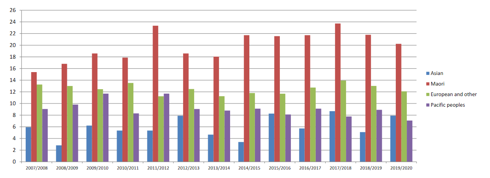

Data collection has been pervasive in recent years. Private enterprise uses personal data for targeted content, to the extent that they trade and buy personal data. Despite this, the information gained from mass data collection is invaluable. This article is going to explore the value and opportunities granted by that information, particularly in the public domain. While the private sector uses personal data for profit, there are public and educational uses of data that include public statistics, opt-in data collection, and statistical analysis that can change modern society for the better.
The first point to bring up is statistical analysis. In NZ, we have public access to statistics and insights through websites like StatsNZ, EducationCounts and IRD. Often, before we begin any venture, we need information. The statistics provided by these websites grant us that informed information and trends about our society and country so we know how to move forward. From these statistics, we are also more informed about issues and concerns beyond our personal bubble. For example, New Zealand is overrepresented in youth suicide rates, particularly for Maori peoples.

The next point to bring up is opt-in data collection. While we have the General Data Protection Regulation from the EU to monitor and allow deletion of data, generally speaking we’re unaware of what data businesses are collecting from us. Exceptions to this are surveys, census and opt-in data collection. These are the bread and butter of public data collection, so that informed decisions can be made about the populace. An example of this is New Zealand's referendum on abortion and marijuana. Through collating people's political preferences, we can make change to move New Zealand forward.
This wouldn't be possible without the data collected from surveys and census. While NZ's government had a decent idea about the direction this referendum would take, the information gleamed from this means they can make a more informed decision about policy going forward. Another great example of opt-in data collection is New Zealand's COVID tracing app of 2020. In a vigilant world where an epidemic can strike at any time, the ability to trace and track people that travel to different businesses is invaluable. NZ is fortunate enough to have both the population and the infrastructure to participate in the COVID tracking. Making covid tracing mandatory for businesses was a big step in keeping on top of this. With the data collected voluntarily from us, we can rapidly quell outbreaks as they come up. This kind of data collection is invaluable, and has left NZ as having one of the best COVID responses in the world.
A third point to bring up is academic analysis. Raw statistics are valuable for information, but educated understanding of that information is what leads to understandable and digestable knowledge. And that can lead to change. A good example can be read in a study done in 2012 about the five personality traits, and how they most determine academic achievement. It includes internal and external motivations, but one of the biggest predictors of academic achievement is conscientiousness.
We can can see here, and in many other studies, the value of correlating and interpreting data. Through this, we can identify that becoming more conscientious can lead to higher grades. And we can know this, because of data collected by surveys and studies and then analyzed. Another good example is the study for optimism versus conscientiousness in the predictor for academic achievement.
Understanding and interpreting information is its own subset of skills and beyond the scope of this article. However, we can see and recognize the value in learning these correlations. Learning that conscientiousness is a valuable trait in academia means we learn to become conscientious ourselves, and make change necessary to learn and grow. Learning that optimism is an inverse predictor of performance in low-conscientious people means that those people who know they are less mindful can be sure to shore up their shortcomings. This information is invaluable for personal growth and achievement in academia. We can use this to alter our own behaviour or recognize behaviour in other people and help our individual communities grow.
A final small point I want to bring up is medical data collection. COVID and suicide rates have already been mentioned, but a big key in improving life expectancy and quality of life is medical data collection. Water fluoridation is the example I want to mention here. NZ's Ministry of Health (2021) state that there is 40% less tooth decay afflicting young children and teenagers in areas with fluoridated water. We would not know that statistic, or the epidemic of tooth decay in New Zealand, were it not for data collection and aggregation of tooth decay.
To finish this off, there is plenty of value in data collection in modern society. We can see the results of data collection to recognize over- or under-representation and make changes to improve them. We can use opt-in data collection to make policies and improve response time on national emergencies. We can also analyze and interpret data to make better and more informed decisions about ourselves and the populace. While data collection is definitely pervasive in the corporate world, the effects of social data collection cannot be understated. Knowing where the holes or the neglect are in ourselves and our communities means we gain the perspective to move forward knowingly in the world. And knowing where we excel or our communities thrive means we can learn and leap ahead those categories, or use them to prop up neglected groups until they are healed.